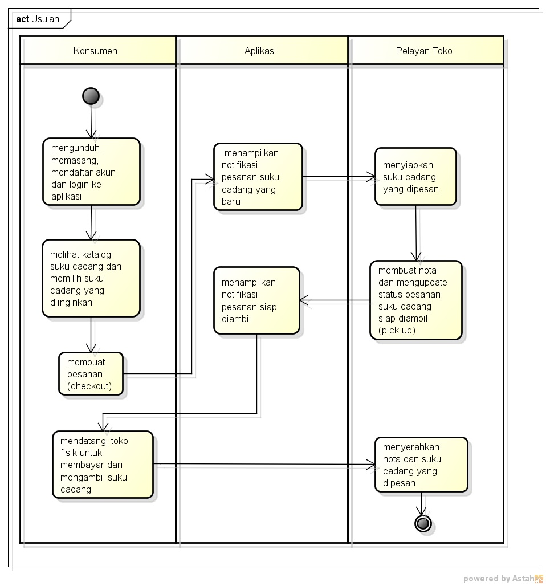

Rabu, 21 April 2021
NIM : 1811500029
Nama : Adysha Puspa Dewi
Kelompok: TI6A
Hasil menyadur:
Studi Kasus Analisa Sistem Usulan - Pada kasus pemesanan sistem berjalan sebelumnya
Menganalisa Solusi - Menganalisa Proses Bisnis dari sistem yang diusulkan - Membuat Activity Diagram untuk memodelkan
- Analisa sistem usulan, sistem yang diusulkan dapat memberikan solusi permasalahan pada sistem berjalan, yang dapat memberikan dampak yang berarti kepada konsumen dan pelayanannya. Misalnya: membuatkan Aplikasi pemesanan suku cadang,
sehingga konsumen tidak perlu datang ke toko fisik, dapat melakukan pemesanan dari rumah dan tentunya akan menghemat waktu dan biaya. Dengan adanya aplikasi dapat terbantu tidak memerlukan banyak pelayan yang bergerak
- Proses bisnis usulan -> prosedur yang perlu dilakukan, pada sistem usulan
- Activity diagram, menggambarkan proses bisnis bukan aktivitas urutan pada form/suatu halaman (aktornya melakukan apa), tapi menggambarkan aktivitas sistem (yang terlibat pada sistem tersebut)
Hasil activity diagram pada sistem usulan:

File astah dapat di download disini.